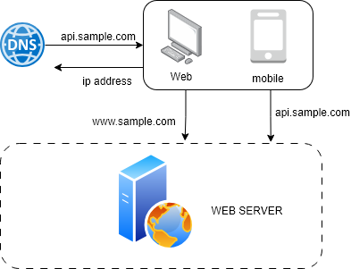
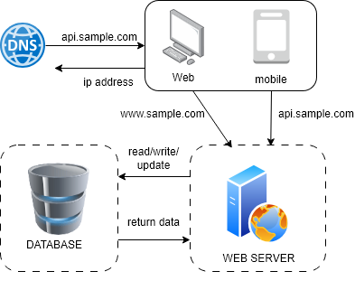
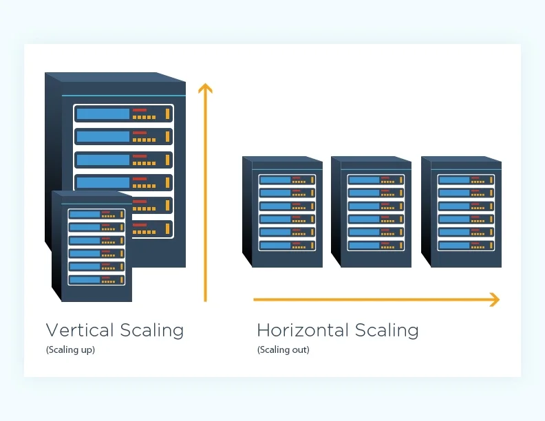
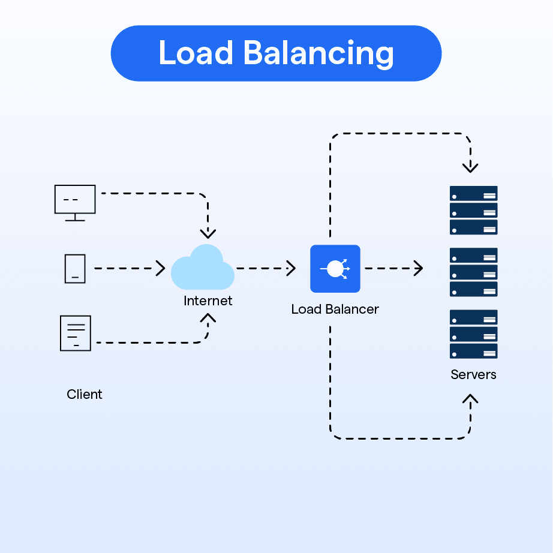

Key Fundamentals of System Architecture
Why is it Important?
Designing a system for millions of users is like starting with something small and simple for just one person and slowly improving it as more people begin to use it. At first everything is easy to manage, but as more users come in the system needs to become faster, stronger, and more organized. This does not happen all at once. It grows step by step with continuous improvements. This is important because if a system is not prepared to grow, it can become slow, crash, or stop working when many people use it at the same time. By learning how to expand a simple system into a bigger one, you can build systems that work smoothly and reliably even with many users.
Contact Me:
jessieconnralph.official@gmail.comChapter 1
System Design Concepts
Chapter 2
Building Big Systems Made Simple
Chapter 3
From Small Ideas to Massive Systems
Chapter 4
The Journey to Scalable Systems
Chapter 5
Think Big: Designing Systems for Millions
Chapter 6
Simple Start, Massive Scale
Chapter 7
System Design Made Easy and Powerful
Chapter 8
From Beginner to Pro in System Design
Chapter 9
Building Systems That Grow
Chapter 10
Scaling Up: The Art of System Design
System Design Concepts
Chapter 1
Single Server Setup
Building a system starts small, like taking the first step on a long journey. At the beginning, everything runs on one server: the web app, the database, cache, and more.
Users access the website using a domain name, like api.sample.com. The DNS service gives them the server’s IP address. The browser or mobile app then sends an HTTP request to that IP, and the server responds with HTML pages or JSON data for the app to display.
Traffic comes from two main sources: web applications, which use server-side languages like Java or Python to handle logic and HTML/JavaScript to show pages, and mobile applications, which communicate via HTTP and usually receive data in simple JSON format.
The key idea is to start simple with one server and understand how requests travel from users to your system.

- User visits a website using a domain name, like api.sample.com.
- The Domain Name System (DNS) provides the server’s IP address (e.g., 12.123.12.123).
- The browser or mobile app sends an HTTP request to the server’s IP address.
- The web server processes the request and responds with HTML pages or JSON data.
- For web applications:
- Server-side languages (like Java, Python) handle business logic and storage.
- Client-side languages (HTML, JavaScript) handle what users see on their screens.
- For mobile applications:
- HTTP is used to communicate with the server.
- JSON is commonly used to send and receive data because it is simple.
Database
As more people use a system, one server is not enough, so we use multiple servers: one for handling website and mobile traffic, and another for storing data in a database. For databases, you can choose between relational (SQL) databases like MySQL or PostgreSQL, which organize data in tables and are good for most apps, or non-relational (NoSQL) databases like MongoDB or DynamoDB, which might be the right choice if your application needs super-fast responses, your data is unstructured or doesn’t fit into tables, you only need to store and read data in formats like JSON, XML, or YAML, or you need to store a huge amount of data that grows quickly.

Vertical scaling vs horizontal scaling
Vertical scaling, or scaling up, means making a single server stronger by adding more CPU, memory, or other resources. Horizontal scaling, or scaling out, means adding more servers so they can share the work. Scaling up is simple and works well when there are few users, but a single server can only be so powerful and if it stops working, the website stops too. Scaling out is better for big systems because it can handle many users and keeps the website running even if one server fails. In the old setup, users connect to only one web server, so if it is too busy or goes offline, the website becomes slow or stops working. A load balancer helps by sending users to different servers so the website stays fast and always works.

Load Balancer
A load balancer helps by sharing incoming traffic evenly among all the web servers. Users connect to the load balancer instead of connecting directly to the servers. The load balancer uses private IP addresses to talk to the servers, which makes the system more secure because private IPs cannot be reached from the internet. With a load balancer and multiple web servers, if one server stops working, the traffic is sent to the other servers so the website does not go offline. If more people visit the website, you can add more servers, and the load balancer will automatically send requests to the new servers. This makes the web part of the system stronger and more reliable. For the database, there is still only one server, so we need database replication to make sure the data is safe and available even if one database goes down.

Database Replication
Database replication in a master-slave model works by having a single master database handle all write operations (insert, update, delete), while multiple slave databases handle read operations, improving overall system performance since most applications perform more reads than writes. This setup enhances reliability and high availability because data is copied across multiple servers, ensuring access even if one fails. If a slave database goes offline, read requests are redirected to other slaves or temporarily to the master, and if the master fails, a slave is promoted to take its place, though this can be complex if data is not fully up to date. Combined with a load balancer, user requests are distributed to web servers that read from slaves and send write operations to the master, and further performance improvements can be achieved by adding caching and using a CDN for static content.